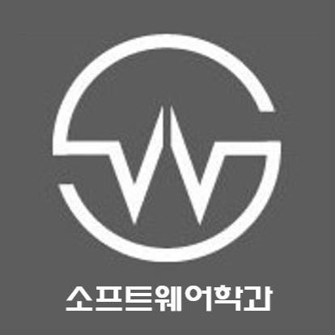

1. 컴퓨터 소프트웨어의 이해, 개발 및 응용에 필요한 개념, 원리, 이론 및 기법들을 모든 전공에서 원서를 이용하여 체계적으로 학습 한다.
2. 소프트웨어에 관련된 어떠한 일을 하든지 필요한 부분, 문제해결 능력과 실습을 강조
3. 소프트웨어 기술 및 저변 지식을 기반으로 소프트웨어 개발 리더, 기술 경영자, 또는 창업자로의 길을 준비하기 위해 경영 관련 기본 과목들과 역사 등 인문 관련 기본 과목들을 배움
4. 산업체 견학, 관련 분야 전문가 특강, 산업체 인턴십 연계 등을 통하여 산업체를 잘 파악하고, 산업체에서 요구하는 실무적인 능력을 키운다.